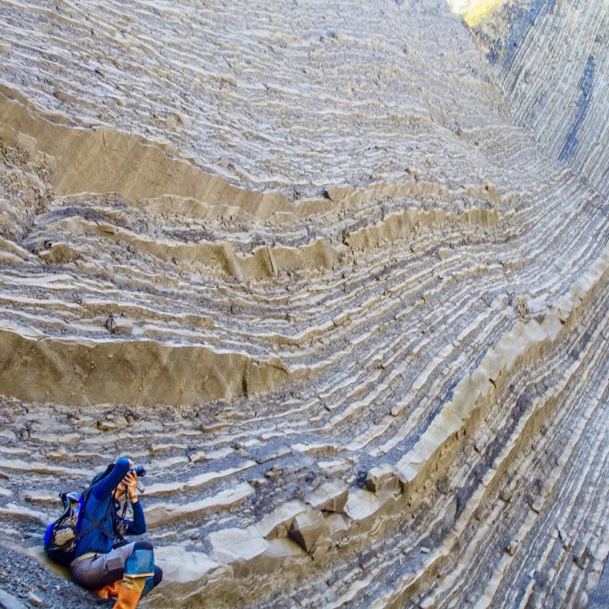
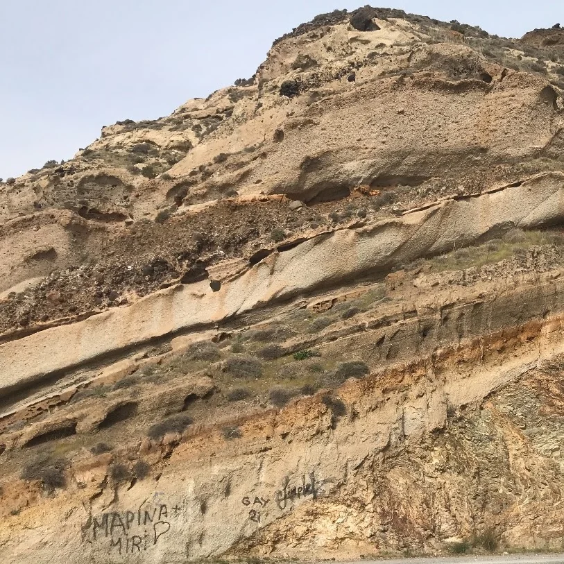
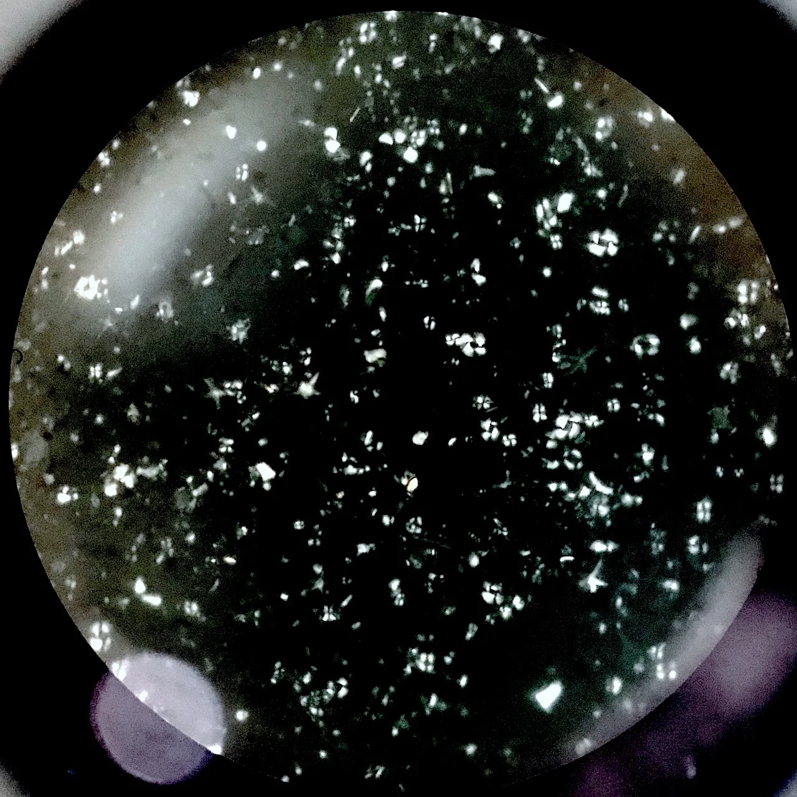
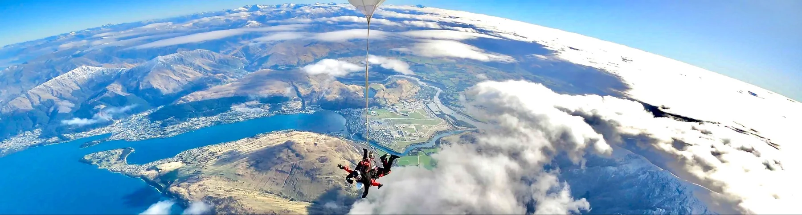

Sedimentology and stratigraphy
Origin, transport, and deposition of sediments, and their patterns through time and space.

Austin, TX · 30.27°N 97.74°W
Quantitative geoscientist | Sedimentologist | PhD


I am a geoscientist with over a decade of experience in clastic sedimentology, stratigraphy, and geomorphology. Focusing on deep-water and fluvial systems, I integrate field and subsurface geological observations with machine learning, process-based modeling, and automated data engineering to solve complex real-world problems. Off the clock, I enjoy hiking, basketball, tennis, and skiing/snowboarding.
Origin, transport, and deposition of sediments, and their patterns through time and space.

How sedimentary basins and near-surface crust develop, the basis for reading geologic history.

How surface processes, climate, and tectonics shape landscapes, from field observation and numerical models.
Mapping and direct observation supply the field constraints that tie an interpretation to the rocks and land in front of you.
Magnetic minerals in rock and sediment can preserve magnetic archives of field direction and grain alignment.

These tiny marine fossils are biostratigraphic markers that help place sedimentary layers in time.

Elevation models yield DEM metrics such as slope, relief, and the pattern of the drainage network.
Landlab-style landscape simulation follows how hillslopes and rivers reshape topography over time.
goSPL-style source-to-sink modeling tracks sediment from eroding uplands into the basin fill.
Contact
